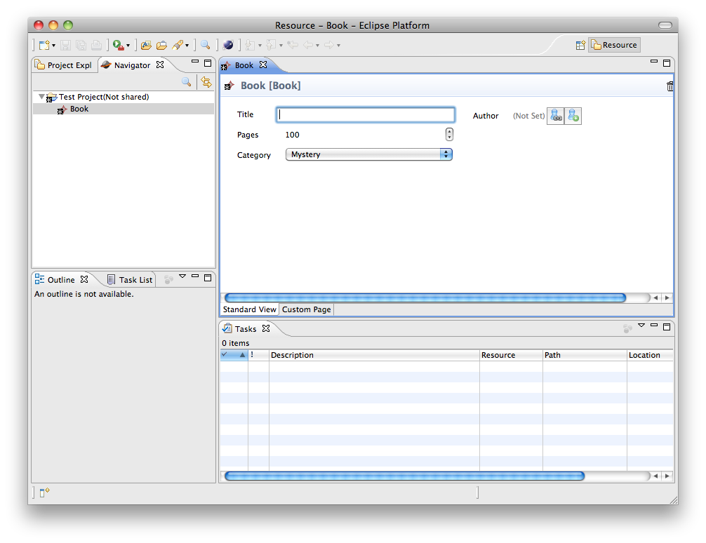
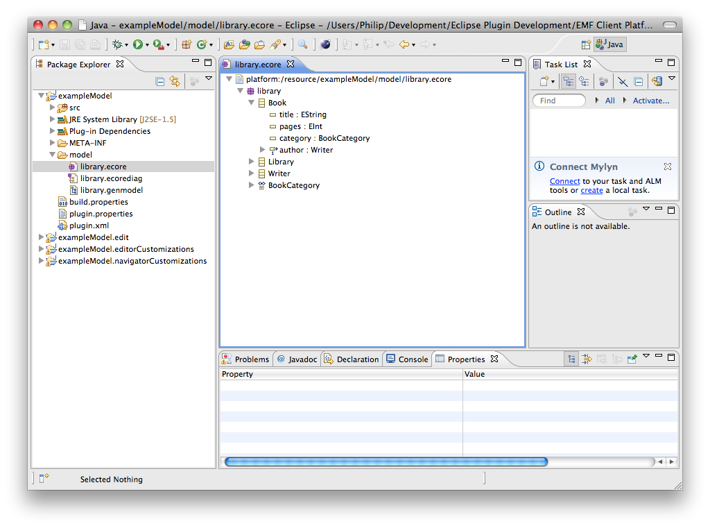
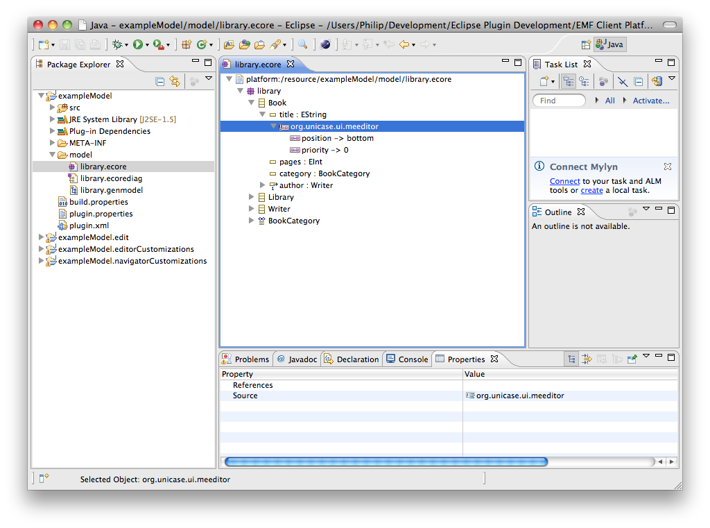
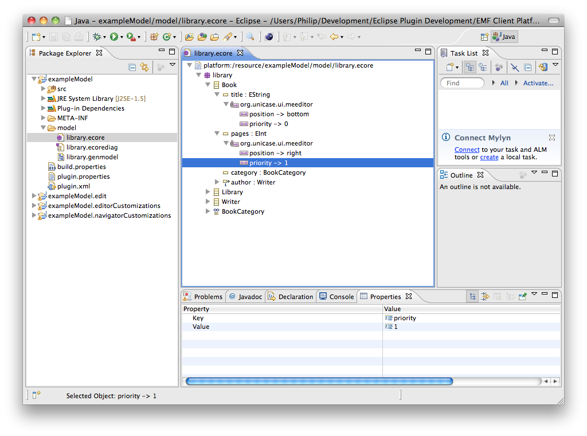
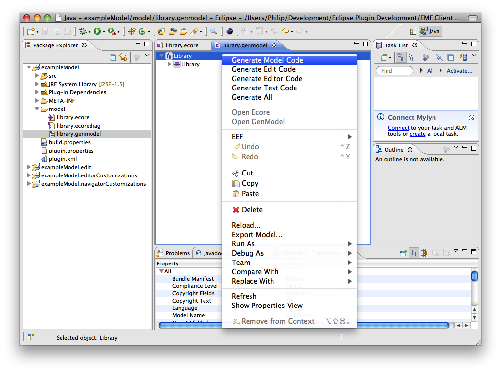
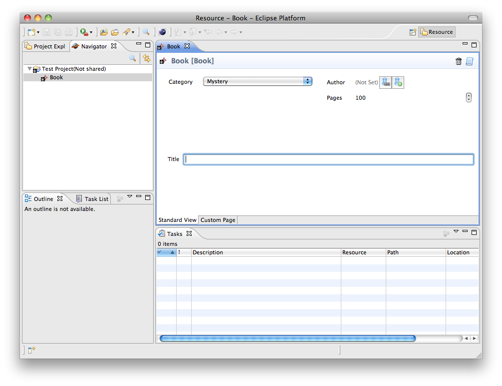

If you have setup your Eclipse developer environment as outlined in the previous tutorials, you have learned how to run a EMFCP instance and add model elements to a project.
The following steps will explain how to arrange the attributes in the EMFCP editor.
Step 1: Check default behaviourBased on the example model, the default editor for a model element of the type Book will look as follows.

We will change this layout by rearranging the order of the attributes and editing the width of one input field.
Step 2: Check the default modelIn your Eclipse developer environment, open the model definition by double-clicking the file library.ecore in exampleModel/model.

As you can see, the elements Book.author and Writer.books are already annotated.
Step 3: Editing the model elementsRight-click on the attribute title of the model element Book and select New Child >> EAnnotation. In the Properties-View, set the source to org.eclipse.emf.ecp.editor. Next, right-click on the new EAnnotation and add a new Details Entry child. In the Properties-View, set the key to position and the value to bottom. Add a second Details Entry-child and set the key to priority and the value to 0. In the editor, this will change the position of the input-field for the title to the bottom.

Next, add an EAnnotation to the pages-attribute and give it the source org.eclipse.emf.ecp.editor. Add a first Details Entry with the key position and the value right. Now, add a second entry with the key priority and the value 1. These changes will position the editor-field for the pages-attribute to be displayed below the editor-field for the author, on the right side of the editor window.

Step 4: Generating the codeIn the Package Explorer, right-click on library.genmodel and select Reload .... In the popup-window, select Next, Next and Finish.
In the library.genmodel-Editor, right-click on Library and select Generate Model Code. Right-click again and select Generate Edit Code.

Step 5: Check the resultsWhen you start your EMFCP instance, the new editor for a model element of the type Book will look as follows:

As expected, the input-field for the title-attribute is displayed on the bottom of the editor-window now, whereas the pages-attribute can be edited on the right side below the author.
There is a third possibility to arrange the attributes. Attributes can be set to "hidden" that means they are not shown in the generated editor. This can be done by an EAnnotation with key="hidden" and value="true".